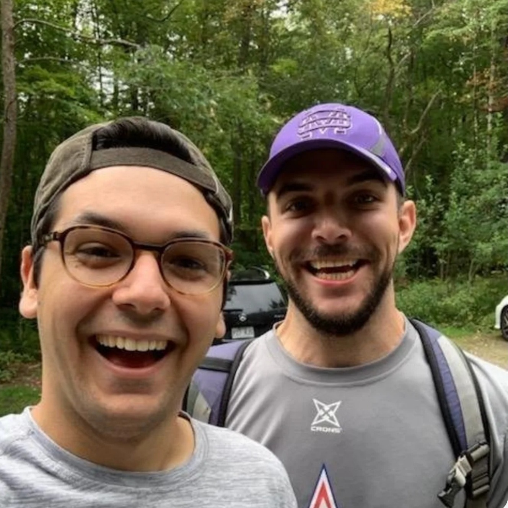
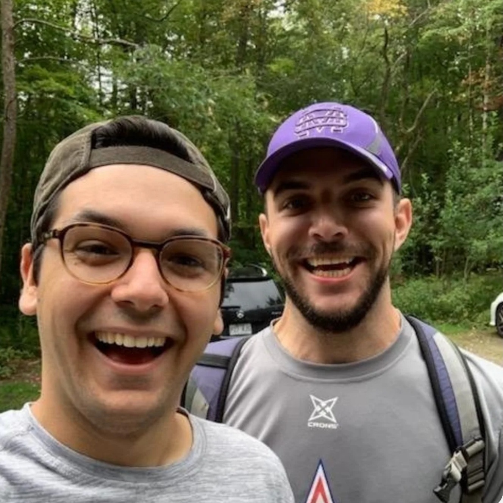
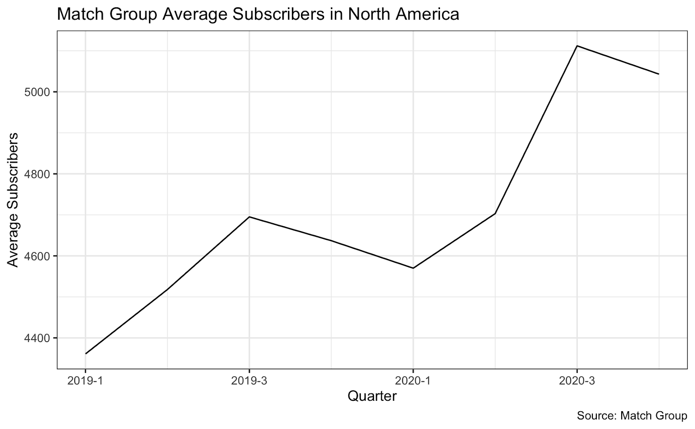
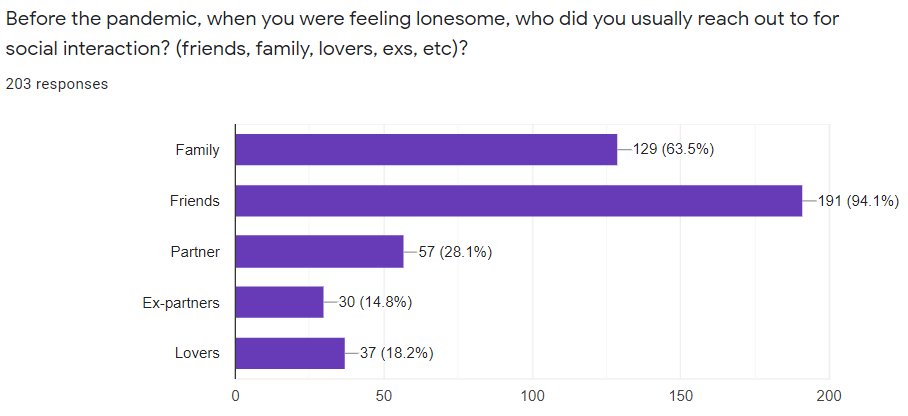

Six feet apart. Masks on. Disinfect. It has been a year since the pandemic has pushed people out of arm's reach.
This persistent distance and isolation has laid new pressures on people's shoulders and tested the limits of once reliable social safety nets. Limiting avenues of self validation through in-person interpersonal connections. Even with technology bolstering the bridges between friends and family, for some, those connections wore thin as time wore on and created demand for something more substantial. Something more that could potentially be found through a window to the world framed by dating applications.
The pandemic has created a new sort of isolation, a new sort of loneliness. Connecting with friends online or on the phone had, prior to the pandemic, been complimented by hanging out in person. Now, the desire to reaffirm those connections is in conflict with the need to be safe. And in cases where that follow-up has been lost, those once dependable lines of connection can feel incomplete, exposing the limits of online connectivity.
Fighting with Loneliness
Cameron Hager, 26, has been working remotely during the pandemic and as a natural extrovert and people person, was having difficulty with the isolation. Hager spoke to how his days began to grow repetitious and as time went on, his desire to see his family and friends grew steadily more intense until one day, after a fairly normal day at work, he began to cry and couldn't stop himself.
 


"I didn't really know what to do with myself," Hager said, "I was just relentlessly upset and sad and nervous because I don't really know what is happening in the future, four months down the line, or when it's going to end. It was a moment of, I couldn't escape and I was just really looking for an escape."
By the Summer, Hager had resolved to return to dating apps in hopes of restoring a sense of normalcy to his life. For Hager, the risks of meeting someone new during the pandemic was a consideration, but the idea of simply waiting for the pandemic to end and the uncertainty involved was far less appealing.
"Being single at 26, this is the time I'm normally going to be dating, and the pandemic just kind of stopped that, which was fine for a little bit," he said.
As the pandemic has stretched onwards beyond the limits of most expectations, the impact of loneliness and isolation has become all the more pronounced. A small survey of 203 respondents as of the writing of this article helped to provide additional insight into what this might look like. According to the survey, 64% of respondents were dealing with negative emotions more often than they had prior to the pandemic. A result that almost mirrors that of a survey conducted by CNBC that found that nearly 7 in 10 young adults from the age of 18-23 were experiencing loneliness.
Unsurprisingly, around 70% of the respondents of the small survey said that their desire to connect with people had increased over the course of the pandemic. Almost all the respondents answered they have experienced increased loneliness as the pandemic has gone on.
While people can't connect in person, there is one place they can meet: the dating app. It has become an increasingly popular mode of communication and connection.
Match Group, which includes major dating apps such as Tinder, Hinge, and okCupid, has seen a steady rise in the number of subscribers, according to its financial results. After a slight drop in the first quarter of last year, subscriber numbers grew dramatically ending the year with over 5 million average subscribers.
For young people like Erlene Tuazon, 25, the balance between the support of friends and family and that of a potential companion and the difference between the two isn't always the easiest to explain or to reconcile. Tuazon had suffered from extreme depression early on in the pandemic but had managed to navigate those emotions with a balance between the support of her friends, online support groups as well as arts therapy.
Tuazon explained, "It was to the point that I didn't want to get up anymore, that kind of thing. But I remembered I have family, let me reach out to my family...I started talking more to my family, more to my friend."
Still, despite the multi-layered support structure, there was something missing that Tuazon still sought to reach out and claim. In a conversation with one of her friends, Tuazon explained that turning to dating applications was less about the contribution made by friends, but more about the search for something more consistent and more personal. As she would put it, a companion or her "forever person."
"Yeah you could satisfy my needs in caring for me, for and loving me and everything all the above. But there are times, I told her, I maybe need affection from somebody else. Not because you're not giving me enough, but the fact that I think that this person could give me x,y,z reasons...I want someone to be there with me, a companion."
Risk of Meeting New People
Yet even for young people who have found a great deal of use in dating applications, the question of caution with regards to public health concerns have come up with varying degrees of impact. People who otherwise wouldn't ask about someone's health now do. According to the survey, the difference in health concerns prior to the pandemic diverge rather prominently. Before the pandemic, 66% of respondents said that it was very important that they knew a potential match was STD free. By comparison, almost 65% of respondents said that they would take someone’s word about being Covid free.
This raises the question, of whether or not people have become less cautious as the pandemic has gone on? Does the desire to connect override people's need to be safe? Has the potential for that more intimate connection become more important than being able to confirm, to a reasonable degree of certainty, that the person on the other end of the line is healthy?
For Emma Hoey, 22, who began using dating applications more seriously during the pandemic, the answer to that question has yet to be complicated by her dating life. Throughout the pandemic, safety has been a number one priority for Hoey, all the more so when she learned that she has an autoimmune disorder.
As soon as a rapport has been established and it looks like things might go further, Hoey always asks her match to send a screenshot of negative test results. She has never felt uncomfortable asking and fortunately, has yet to have a negative response to her request. "Everyone's been super receptive and understanding that if you're someone high risk, it's not worth it to take the risk," she said.
The benefit to being open and consistent with her position on health concerns has allowed Hoey space to feel more comfortable when deciding to make the jump from offline to online. When asked what a first date offline would look like, Hoey said that she would invite her date for an at-home dinner accompanied by a movie (or television) and something to drink.
"That'll be a good first date,"" said Hoey, "Maybe we'll kiss."

On the opposite end of the offline to online question, one interview participant, a 20-year-old sophomore student, noted that in her experience, there is simply no option to meeting someone online. While using dating apps had helped to ease the loneliness that had become continually present in life after deciding to quarantine, her concerns over the pandemic have put a firm hold on meeting anyone in person.
Despite not wanting to meet in person, the interviewee acknowledged that the connections that she was seeking were those that provided the kind of connections that family and friends couldn't provide. "You need something more, maybe romantic or even sexual," she said, "honestly, stuff that you can't ask other people for."
During these times, the interviewee noted that she had reclaimed a feeling of control over her life, the outside world had too many variables to make taking the risk worthwhile. Not even proof of testing or vaccination is enough to change her mind. "Because there's so much left unknown, I'd rather just not engage," she said. "It's just the easier choice. And I think that when you look at the cost benefit, it's a lot of anxiety meeting up with someone new right now that I don't think is worth the potential payoff."
Still there is diversity in experience and levels of comfort for those willing to take the chance to meet offline. For Qi Zhang, dating during the pandemic has been a matter of balancing caution with her want to meet in person. Zhang explained that staying safe with activities that are mindful of public health mandates like social distancing is a good way to meet someone for the first time.
"When I was with my ex, the first time I saw him, we both wore the mask and we tried to avoid groups of people and tried to have a walk in a park, basically a social distance area," Zhang explained. "And later on in the relationship I went to his place.
Though able to stick to the boundaries that she's comfortable with, Zhang noted that the conventions of pre-covid dating had come up in her dating life and had, at one point brought her pause when scheduling a date with her current boyfriend.
"The guy I'm still dating, the first time we had a walk, the second time he asked me to go in Indian restaurant to dine in,"" said Zhang. "I was like, uh...so I texted him back and said I really don't feel comfortable to dine in right now so I think we can do remote chatting instead. Funny thing, he texted me back and said, 'Actually I have the same thought.'"
Other Relationships Changed Too
As people navigate the subtleties of online dating, one thing that has been made clear is that young people have been challenged to consider how they are managing their feelings through their connections with other people and how they validate themselves through those connections. The pandemic has removed a degree of choice and thus limiting the effectiveness of those relationships. Prior to the pandemic, 63.5% of respondents said that they reached out to family when they were lonely and 94.1% of the respondents said that they contacted friends.
But what is it about the distance from these networks that has made the long time bonds feel insufficient?
The dating app was the "only avenue to meet people" and "only source of validation," said Thao Tran, a 24-year-old investment manager and teacher in Seattle, Washington. For someone who calls herself a "huge extrovert," loneliness was her entire 2020, even though she has been using five dating apps throughout the pandemic.
One time in the fall, Tran became obsessed with the dating app in "a very unhealthy way." Endless swiping led her to the point where she felt like she was "literally swiping on all of the population of Seattle," she said.
That's when she needed to temporarily move to her hometown in California, and this brought her back to her real self. After spending time with her family and friends, now she feels more connected to them, even than pre-pandemic. "My emphasis on love right now is my friends and my family because they're giving that back to me."
Back in Seattle, one weekend in early February this year, she almost went over to a guy's house for a drink but stopped herself. "I actually ended up just sitting and drinking a glass of wine and writing all of my friends Valentine's Day cards." For her, friends and family are "the sense and source of love" and that's what she feels "really great and fulfilled by."


She still uses the dating app, but "not as dependent." It is one way of meeting people, but not the only way anymore. She was recently asked for a number at a nearby coffee shop. Without knowing how this guy looks behind the mask, his age, occupation, or hobbies--all the information she could get if on dating apps--, she decided to go on a date with him because the elbow bump he gave her was enough to confirm he was taking the pandemic seriously.
As the pandemic has gone on and the impact of social distancing and isolation has weighed more heavily, people have turned to dating applications as a means of reconnecting or filling a void in their hearts. Making new bridges where others have been eroded or forgotten as they spend more time apart.